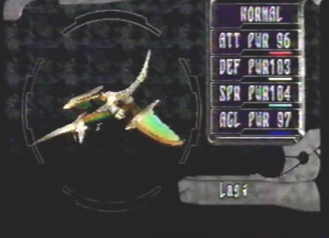
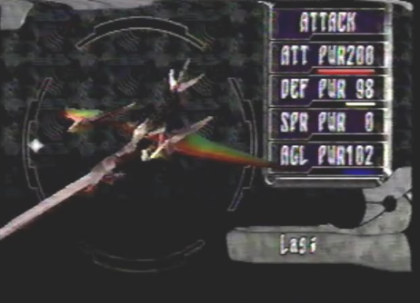
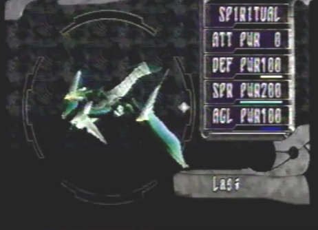
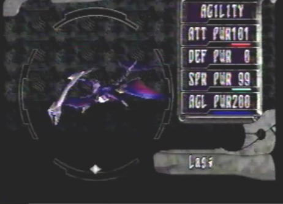
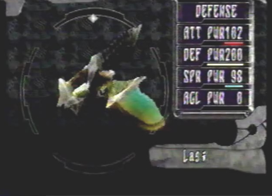

Dragon Forms and Full-Gauge Class Explanation |
So your dragon just started
to change into different forms. Well, that's good because these forms
are going to help you out greatly in battle! To change dragon forms
go to the player menu and go to Select Dragon Type. You can also change
dragon forms while in battle, at the cost of 1 gauge. It is here in
this menu, that you can change into any of the 5 different dragon forms.
Just move the cursor around in a circular motion until your dragon takes
on a form. Normal form is a well balanced form. Attack form boosts your
lock-on laser attack power in battle. Spiritual form will boost your
berserk attacks so they take more damage. Agility form gives you greater
speed in battle, your gauges will fill up faster as well. Lastly, Defense
form will raise your defense and allow you to take less damage from
oncoming attacks. |
Healing Wing Berserk Special Ability When 3 gauges are filled in battle if you are in Normal dragon form, you will recover HP over time. |
 |
Assault Wing Berserk Special Ability When 3 gauges are filled in battle if you are in Attack dragon form, your laser power will be raised. |
 |
Berserker Wing Berserk Special Ability When 3 gauges are filled in battle if you are in Spiritual dragon form, you will gradually recover BP. |
 |
Swift Wing Berserk Special Ability When 3 gauges are filled in battle if you are in Agility dragon form, the speed at which your dragon gauges fill will accelerate. |
 |
Protection Wing Berserk Special Ability When 3 gauges are filled in battle if you are in Defense dragon form, your defensive power will be raised. |
 |